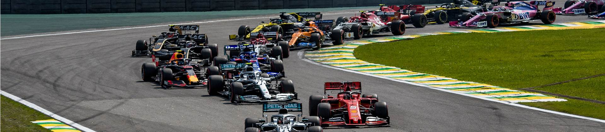
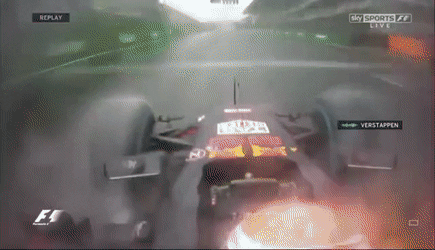
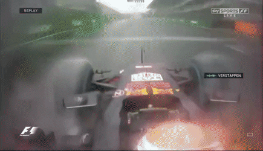
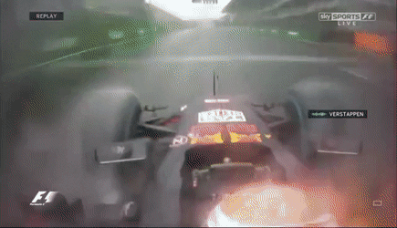

BRAZILIAN GRAND PRIX
Cicuit Length:
4.304 km (2.674 mi)
Turns:
15
Number of Laps:
71
First Grand Prix:
1973
Race Distance:
305.909 km
Brasil's race takes place in São Paulo.This is a city in Brasil,
about 12,1 Million people live in São Paulo. And across Brasil live about 209,5 Million inhabitants. So far the record holder of this circuit is Valteri Bottas.
This year (2021) the race will be on October 31. The fastest speed last year (2019) was measured at 357.9 km/h.
The most wins on this track are Ferarri, in total they've won 9 times on this track. And the driver with the most wins on this track is Alain Prost with 5 wins to his name.
 

 Winners of the Brazilian GP
2020 - Canceled due to Corona
2019 - Max Verstappen
2018 - Lewis Hamilton
2017 - Sebastian Vettel
2016 - Lewis Hamilton
2015 - Nico Rosberg
2014 - Nico Rosberg
2013 - Sebastian Vettel
2012 - Jenson Button
2011 - Mark Webber
2010 - Sebastian Vettel
2009 - Mark Webber
2008 - Felipe Massa
2007 - Kimi Räikkönen